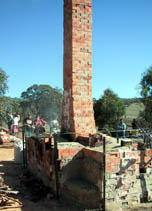

|
The
Merry-Go-Gama Kiln
An
Experimental Kiln
 he
"Merry-Go-Gama" was built by Ian Jones, of the Australian
National University/Canberra School of Art, for the ClayFeast
Ceramics Festival in April 2001. The kiln was an attempt
to use the principle of the traditional German Hoffman kiln on a
miniature scale. The multi-chambered Hoffman Kiln was a type of
kiln used in old brickworks and for lime burning. Unfortunately,
there is not much information on the WWW about this kiln type. Related
to this kiln are also the Bull Trench Kiln, 18th C English
Bottle Kilns, the Vertical Tunnel Kiln and the Vertical
Shaft Brick Kiln, developed in China in the late 1960's
and so-called "Clamp Kilns". Similar to the Vertical Shaft
Brick Kiln, the Hoffman Kiln has found applications in the third
world. "Hoffman kilns are massive - looking down from the top,
the firing follows a circuit around the kiln's oval shape. Clamp
kilns are just a pile of bricks with an opening underneath for the
fuel. Often the clamp has no permanent walls - mud is dabbed all
around to help prevent leaks. The bull's trench is a hole in the
ground in which fuel and brick are stacked then fired." (Excerpt
from "A Ceramic Safari in East Africa",
article by Reid Harvey). he
"Merry-Go-Gama" was built by Ian Jones, of the Australian
National University/Canberra School of Art, for the ClayFeast
Ceramics Festival in April 2001. The kiln was an attempt
to use the principle of the traditional German Hoffman kiln on a
miniature scale. The multi-chambered Hoffman Kiln was a type of
kiln used in old brickworks and for lime burning. Unfortunately,
there is not much information on the WWW about this kiln type. Related
to this kiln are also the Bull Trench Kiln, 18th C English
Bottle Kilns, the Vertical Tunnel Kiln and the Vertical
Shaft Brick Kiln, developed in China in the late 1960's
and so-called "Clamp Kilns". Similar to the Vertical Shaft
Brick Kiln, the Hoffman Kiln has found applications in the third
world. "Hoffman kilns are massive - looking down from the top,
the firing follows a circuit around the kiln's oval shape. Clamp
kilns are just a pile of bricks with an opening underneath for the
fuel. Often the clamp has no permanent walls - mud is dabbed all
around to help prevent leaks. The bull's trench is a hole in the
ground in which fuel and brick are stacked then fired." (Excerpt
from "A Ceramic Safari in East Africa",
article by Reid Harvey).
The
Hoffman Kiln utilizes air drawn through cooling chambers, providing
preheated primary air, i.e. gases exhausted from the chamber being
fired preheat the following chambers before being drawn through
the flue into the chimney. The Merry-Go-Gama kiln can be visualized
as an eight chamber climbing kiln, with the chambers arranged in
a circular fashion around a central chimney. The airflow through
the kiln was in a clockwise direction. A wet newspaper damper was
used to prevent an anti-clockwise airflow coming from the chamber
being packed.
In practice, this kiln was difficult to fire. The airflow didn't
get going as was hoped. However, this doesn't mean that the principles
can't be applied to a kiln of this size.
Next Page > Kiln
Plans > 2
More Articles
|